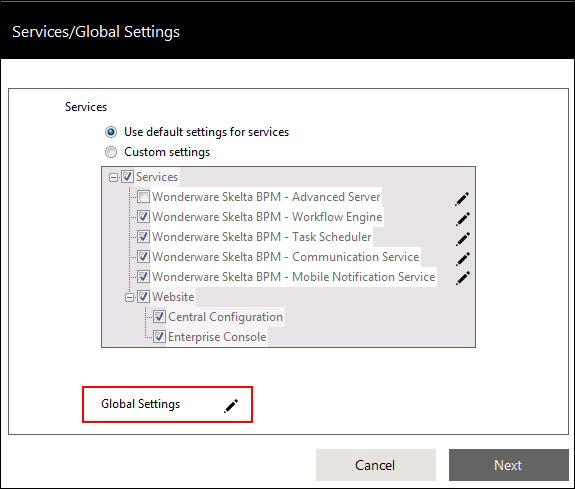
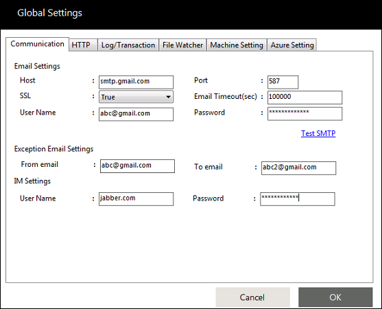
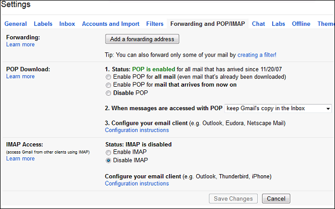

No
Gmail: MailChannel
Setting Up Gmail Account for:
- Mail Communication (For example: Wait for email and email)
- Mail Delivery Channel (Approval, Task, Choice and Check list) in AVEVA Work Tasks
Setting up AVEVA Work Tasks Communication Service from AVEVA Work Tasks Farm configuration wizard
- In the AVEVA Work Tasks Farm Configuration Wizard, go to Services/Global Settings, and then click the Settings
 icon displayed next to Global Settings.
icon displayed next to Global Settings.The Global Settings page appears.


Check list for causes for failures during Test:
- Is your google account valid and active?
- Do you have a firewall/Antivirus tool or something preventing the email getting out?
- Is your internet connectivity ok?
- Based on the information provided in the URL (https://mail.google.com/support/bin/answer.py?answer=13273), enable POP in your google account
.
- POP3 account setting to be configured in AVEVA Work Tasks Communication Service (Services/Global Settings) for retrieving the mail.
Go to Services/Global Settings screen and then click the Settings icon displayed next to Global Settings.
POP time interval can be reduced if you want the AVEVA Work Tasks service to pull mail from gmail server in shorter time period. The settings for mail to be sent through gmail to Company ID.
Note: Ensure not to have any spaces in the bracket while replying.
The AVEVA Work Tasks Communication Service Settings picked up the mail and the task was approved successfully.